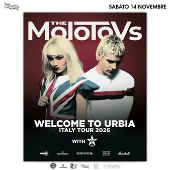

sab 14 nov · dalle 21:30
The Molotovs - Welcome to Urbia
Tra le band più chiacchierate della nuova scena musicale britannica, con concerti ad alta intensità ovunque esauriti e un mix irresistibile di britpop, rock e punk. Tra le realtà più interessanti e discusse della nuova scena britannica, The Molotovs rappresentano ad oggi uno…
 Indicazioni
Indicazioni
- Costi e prenotazioni
- Costo non indicato · Prenotazione non indicata
- Programma
- Programma da verificare. Apri la fonte ufficiale per orari e possibili aggiornamenti.
- In caso di maltempo
- Nessuna indicazione specifica pubblicata.
- Note
- Acquisito automaticamente dalla fonte.
L’EVENTO
Descrizione completa
Tra le band più chiacchierate della nuova scena musicale britannica, con concerti ad alta intensità ovunque esauriti e un mix irresistibile di britpop, rock e punk. Tra le realtà più interessanti e discusse della nuova scena britannica, The Molotovs rappresentano ad oggi uno tra gli incontri più riusciti tra rock, punk e Britpop. Forti di un passaparola sempre più consistente ed oltre 600 concerti alle spalle, molti dei quali registrando il tutto esaurito, la band si è rapidamente affermata come uno dei nomi emergenti più rilevanti del Regno Unito. Brani diretti ed incisivi, un’attitudine autentica e una presenza scenica di forte impatto sono gli elementi che caratterizzano il progetto. Nei loro live, intensi e trascinanti, convivono riferimenti alla grande tradizione britannica dei The Kinks e The Jam, l’urgenza punk dei Sex Pistols e l’immediatezza melodica del Britpop degli Oasis, dando forma a un sound personale, energico ed immediato. Nonostante la giovane età, The Molotovs hanno già conquistato l’attenzione di artisti del calibro di The Libertines, Sex Pistols, Adam Ant e Blondie, che hanno personalmente scelto la band per aprire i loro concerti, oltre ad aver ricevuto il sostegno dei Green Day, confermando una credibilità costruita soprattutto attraverso un’intensa e costante attività dal vivo. L’ultimo anno li ha visti impegnati in un tour internazionale senza sosta, con concerti sold-out da headliner in Italia, Gemania, Scandinavia e Regno Unito, oltre ad apparizioni in alcuni degli appuntamenti più iconici a livello mondiale, tra cui il CBGB Festival di New York, il Festival dell’Isola di Wight e la Wembley Arena. Ora The Molotovs tornano dal vivo per presentare ‘Wasted On Youth’, l’acclamato album di debutto pubblicato a gennaio con Marshall Records. Il disco ha raggiunto la terza posizione della UK Album Charts, vendendo 10.000 copie nella sola prima settimana di pubblicazione. Al centro del progetto ci sono i fratelli Matt (chitarrista e cantante) e Issey Cartlidge (bassista), affiancati da Noah Riley alla batteria, un power trio che rilegge l’eredità del Britpop attraverso un linguaggio più ruvido e contemporaneo, alimentato da rock ad alta intensità e venature punk. Un esordio fulminante che, dopo i concerti sold-out del 2025, riporterà la band sui palchi italiani per una serie di attesi appuntamenti in programma a novembre. Biglietto in prevendita 20 € + dp
Biglietto in cassa (Salvo sold out in prevendita) 25 €
Under 11 ingresso gratuito
Apertura porte e bar ore 20:30 / Inizio concerto ore 21:30
IL PROGRAMMA
Programma e orari
Appuntamenti raccolti dalle fonti elencate. Dove manca un orario, non è ancora disponibile in questa scheda.
Programma pubblicato
- Dal 2026-11-14 al 2026-11-14
INFORMAZIONI UTILI
Prima di partire
- Controllare la fonte prima di partire.
ORGANIZZAZIONE